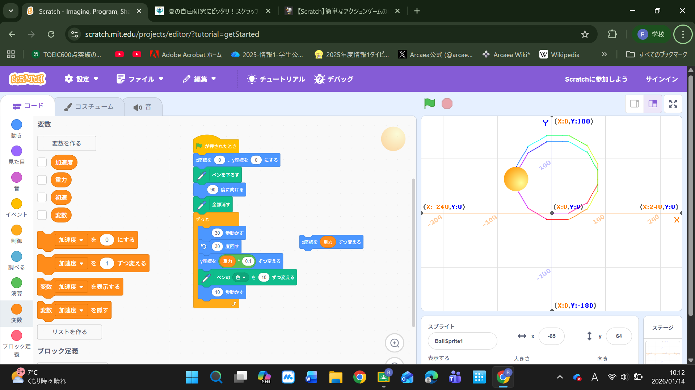
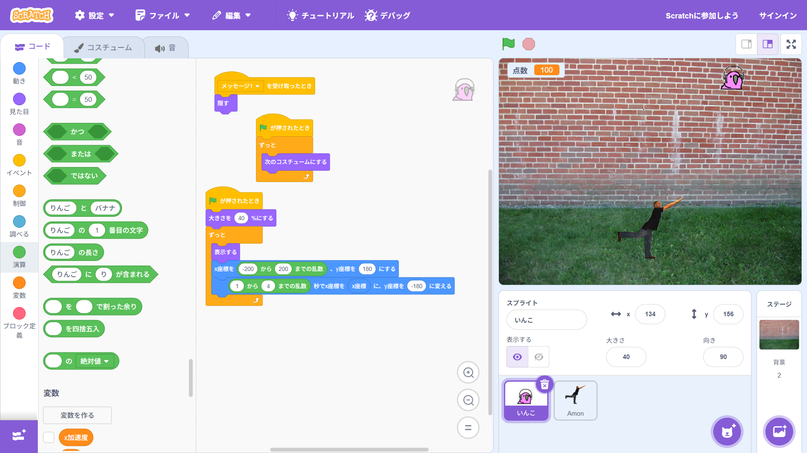

1週目のレポート ： 公大高専１年実習I-1
1b班37番 松本輝
第1週目
1-1 サイエンスアート

1.内容
卓球ボールの動きに沿って線を引くサイエンスアートをscrachで作成した。
2.感想
ラインを途中でやめたかったが途中で終わることができず画面外に出てしまった。繰り返しのブロックを使って回数を調整したほうがよかったと思う。
1-2 ゲーム

1.内容
おじさんのスプライトを矢印キーで操作し、リンゴを集めるゲームを作成した。リンゴのとった数は点数の変数によって換算されるようにした。
2.感想
最初に作った操作だとラグで動くのが遅かったので加速度という変数を作り右矢印が押されたら1ずつ左矢印が押されたら-1ずつ加速度が減るようにし加速度ずつx座標を移動させるようにしたらうまく動いてくれた。
miss504
1-3 ホームページ作成
私のホームページ
1.内容
gihubで自分のアカウントを立ち上げ、tmhrdoi/web を Forして自分のホームページをcommitしてホームページを更新した。
2.感想
homepageの作成とかやったことはなかったけど難しいと思っていた。ですが難しいところは難しかったが基本操作は文字を打ち込んだり画像をアップロードしたりと単純だと感じた。今度は編集だけでなく自分でプログラムしてみたい。
各ページへのリンク
1週目のレポート
2週目のレポート
3週目のレポート
私のホームページ